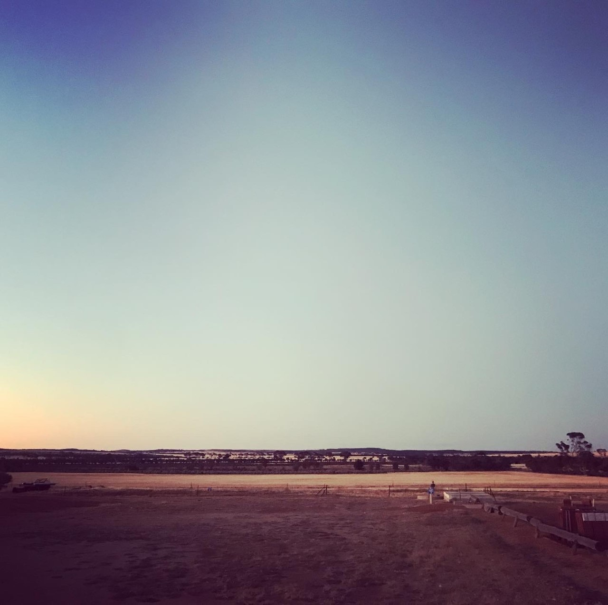

Perth to Esperance via Wave Rock

I feel like this trip was a long time coming, having initially thought we might visit Esperance last year, but never got round to it. In reality, it was probably only a wait of about 2 months, with 2 weeks tacked onto the end due to unfortunate circumstances and the second funeral of the year.
We had a ‘new’ car, my first ever car (although technically registered in Ben’s name, as I didn’t have an Australian licence at the time of purchase, but still, it’s my car), and one more suited to the type of trip that we were going on, with a bit more space for all our camping gear… most of which we didn’t end up using, but better to be safe than sorry. It would also be nice to go somewhere that neither of us had been; even though Ben has lived in WA all his life, he had never been to Esperance or Wave Rock, so to be exploring some new territory together would be fun.
The first call of business was to get Chico off to the kennels, we would like to take him with us on these trips, but (1) – he is a pest in the car, and (2) – you can’t take dogs into national parks in Australia, of which we were going to many. He always knows something is a foot when we start packing anything (it can just be bags to go food shopping), so he was mixture of excitement and apprehension when he is ushered into the car with his bed, tiger toy, and jumper. Chico kept jumping from the back to the front seat and then occasionally trying to sit on my lap (not distracting at all when you’re doing 100kpm on the freeway) as I drove him to the new kennels that we were trying.
We got there and he ran straight into the office to announce his arrival, jumping onto the worker’s lap and trying to give her a kiss; what can I say, he is an exceptionally friendly pupper. Leaving him is always hard, you have to look relaxed and not stressed out, as then he will feel stressed too – I’m sure it’s the exact same feeling parents have when they drop their kid off at school for the first time.
Dog sorted, now we just had to get ourselves all packed and ready to leave. I thought I would get back to a fully packed car, with everything pretty much set for the off… it was not as done as I had expected – the beer was sorted (of course) and all of the camping stuff we wouldn’t end up using was packed, and that was about it. We would later discover that we didn’t have pillows or the extra duvet we use for a bit more padding in our swag, which of course was my fault for having looked in the car before we left and agreed that it looked like we had everything.
Finally on the road at 11.30, we had a long drive ahead of us, the first half hour of which would be the same route I had just taken to the kennels. Once we got out of the final suburb of greater Perth, I was expecting a show of beauty in the many fields that awaited us, I had thought that wild flower season lasted until November, and that we might just catch the last displays of colour… alas, no. There wasn’t even any canola in bloom and so the Golden Outback was true to the name – golden fields of wheat as far as the eye could see. Not that it wasn’t a sight to see, it was, it just got a bit repetitive after 3 hours and I was kind of hoping for something a bit more varied and vibrant along the way. I suppose it will have to wait for another trip, another excuse to make the journey sometime in the future.
We had booked to stay the night on a campsite a few kilometres outside of Hyden and Wave Rock and I’m glad we did. Tressie’s caravan park was off the main road, a little bit noisy with the trucks going by at the night, but that only bothered Ben, generally, once I’m asleep it takes a lot to wake me. We were greeted warmly and given lots of advice for things to see in the area, and maps for how to get there. We had a choice of camp sites and chose a soft grassy area for the night, and there was a kitchen, BBQ area, and ablution block too, luxury.
We knew we had a long drive ahead of us the following day and as Wave Rock was only 10 minutes down the road and would be open for another 2 hours we decided to set up camp and then head off to the rock. When we told people that we were going to Esperance via Wave Rock those who had been said it wasn’t much and you could do it on your way through – a quick look and then on your way. You could absolutely do that, but it’s a hell of a drive to do Wave Rock and get down to Esperance in one day and I’d definitely recommend taking your time and doing it over two.
Wave Rock isn’t as big as I’d expected. It looks bigger in photos because you imagine that it keeps going past the edge of the image, it doesn’t. That’s not to say that it isn’t spectacular. It is quite a sight – it is exactly what it says it is, a huge wave of rock that looms over you. You can climb up the side and walk along the top to get a view, one which I’m sure is beautiful at sunset. There is also a short walk through the trees at the base to Hippo’s Yawn; another large rock structure that again is aptly named and is as if a massive hippo was petrified mid yawn.
The next day, we woke up early, we always wake up early when camping, but this was crack of dawn early and I’m putting it down to the uncomfortable nature of having no pillows. It wasn’t a big issue, it meant that we could get camp packed up, coffee made, and off to the bakery in town by the time it opened. We’d also decided that as it was early, and we had time, and what the heck we were there, we would venture off to see Mulka’s Cave. It is about 15 kilometres from Wave Rock in another rock formation called the Humps. Mulka’s Cave is surrounded by aboriginal folk lore and according to the lady at the campsite, the indigenous population steer well clear of the cave. It boasts the highest number of aboriginal hand prints in Western Australia, and maybe it was the story of the cave or the eerie quiet, but I was more than happy to leave the cave behind and have a post-breakfast stroll up the Humps.
With our legs stretched and bladders emptied, we hit the road again, next stop Esperance, well after 4 and half hours and some toilet stops.

The road to Esperance, at least initially, was much the same as the road from Perth to Wave Rock, endless fields of wheat, with the occasional emu family wandering through the scrub. The landscape slowly started to change the closer we got to the coast, fewer big open fields and more, low scrubby bushland. We finally pulled into Esperance around lunchtime and it was a bit anti-climactic. I had half expected a picturesque seaside town, but it looks like an homage to sixties architecture. We would spend the next day exploring the surrounding beaches and finding out why everyone we had spoken to who had visited loved this place. But for now, we spent an hour killing time before our early bird dinner, wandering up and down the pleasant but perfectly ordinary shoreside boardwalk.
1/3
#WanderOutYonder #WaveRock #Esperance #WesternAustralia
.JPG)